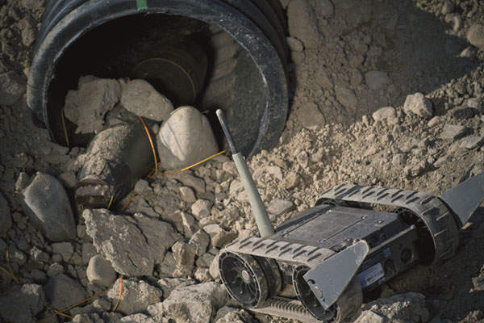
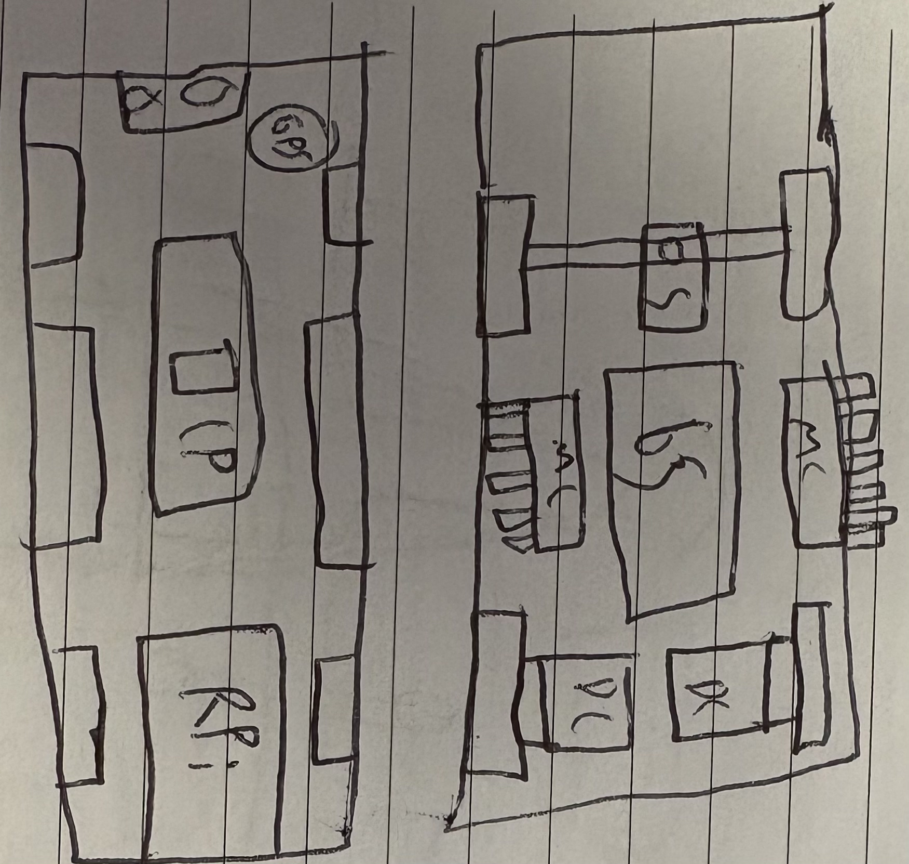
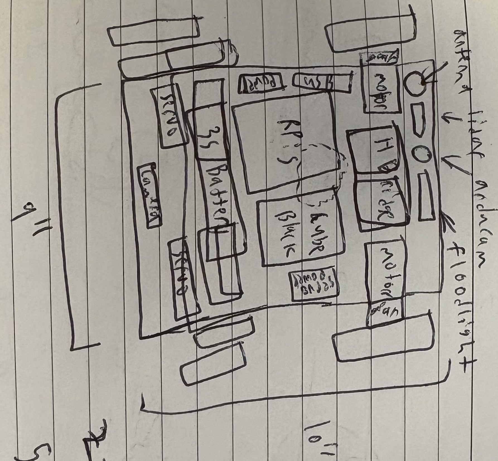
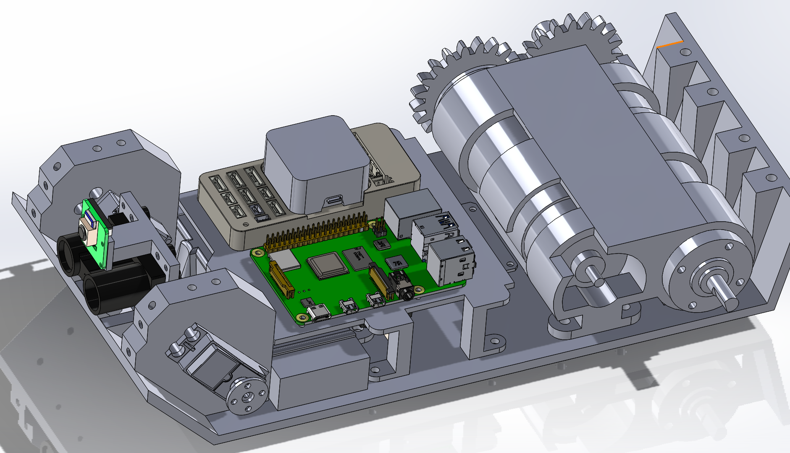
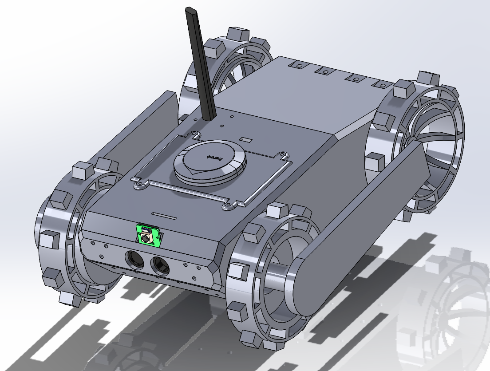

Mr Toad's Wild Rover is the third project of mine to be funded by the Maker Grant program of the Invention Studio. The goal of the project is to develop a durable and autonomous capable rover similar to the iRobot FirstLook, which is used by first responders to scout dangerous environments. By developing this rover, I hope to gain a better understanding of the challenges faced in areas of impact resistance, highly robust design, and abnormal terrain traversal. I'm also using the project to learn how to use the ArduRover stack of ardupilot so I can gain more experience in autonomous path planning and navigation.

I found the FirstLook when doing research on harsh-environment resistant rovers for my robotics team and it amazed me just how versatile such a small device could be. Compact enough to be thrown by hand into hard to reach areas, durable enough to survive the landing, all while having a full array of sensors and communications equipment for reporting back to first responders. It even has additional articulating stilts that enable it to traverse tall obstacles with ease. I felt that to build this would be a great way learning opportunity for designing mechanical systems, but also an opportunity to make a craft to be a testbed for future software development. Most of the parts that I plan on making this with are scrap components I've collected, so that I can utilize the Maker Grant funding to purchase high quality equipment for the critical areas such as the compute module. I started by considering a layout which would both put components in their optimal locations, but also be compact enough to rival the size of the iRobot.


Creating the layout in Solidworks was fairly straight forward, though due to the size of the motors I was able to acquire, I had to pursue a peculiar motor placement.
This will force me to add some kind of power transmission of one motor, be it gears or a rope transmission or something else, which means I have to take care to ensure that
the mechanism is both reliable and without backlash, lest my rover constantly drifts in direction. Additionally, the integration of the climbing stilts presented an interesting
challenge, as their presence meant that I could not use a shaft to retain the front wheels. Even after utilizing an uncommon bearing retainer mechanism for those wheels, the mounting of
the stilts is also concerting due to the length of the shaft required for each stilt. The longer the shaft, the more shear stress on the center which is concerning because the stilts
are meant to lift the weight of the entire rover.
The current status of the project is waiting for stage approval from the Studio and revising the CAD to address the mentioned issues. I'm excited to tackle these challenges and to get into some hands-on prototyping!

